12 vistas de escritorio y 3 móviles. Referencias conceptuales, no capturas de la app. Datos ficticios. Descarga cada SVG y arrástralo al lienzo de Figma Design.
Descargar SVG · 1440 × 1032
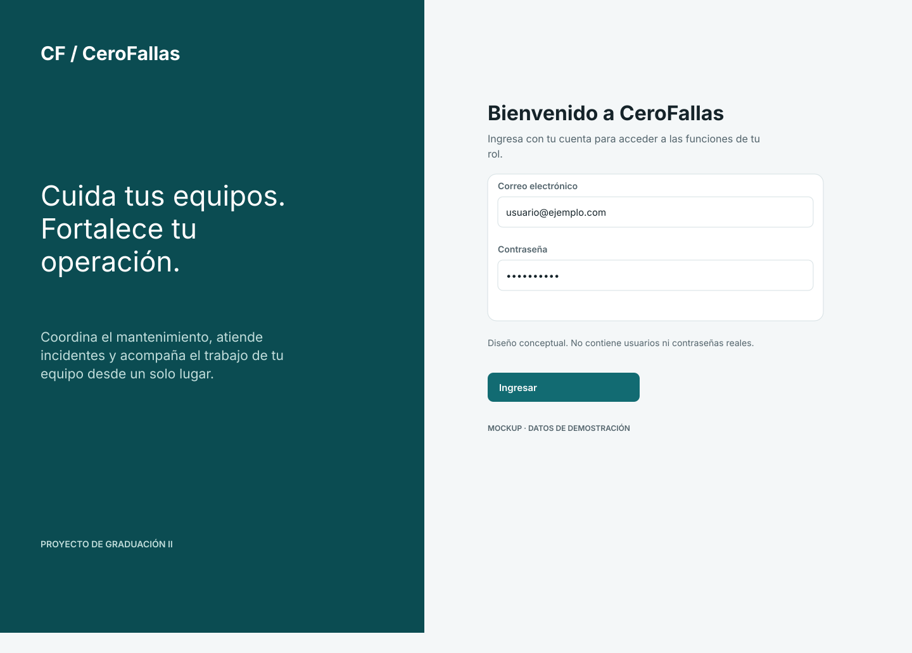
Descargar SVG · 1440 × 1182
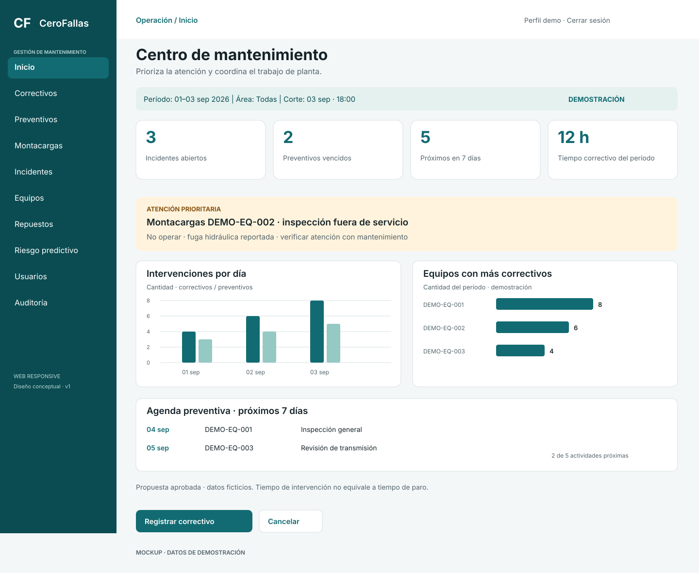
Descargar SVG · 1440 × 1132
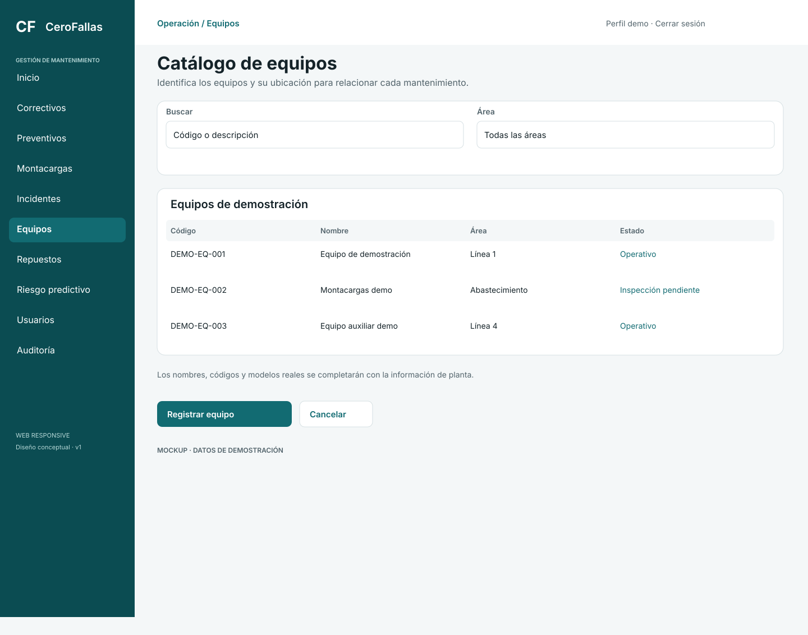
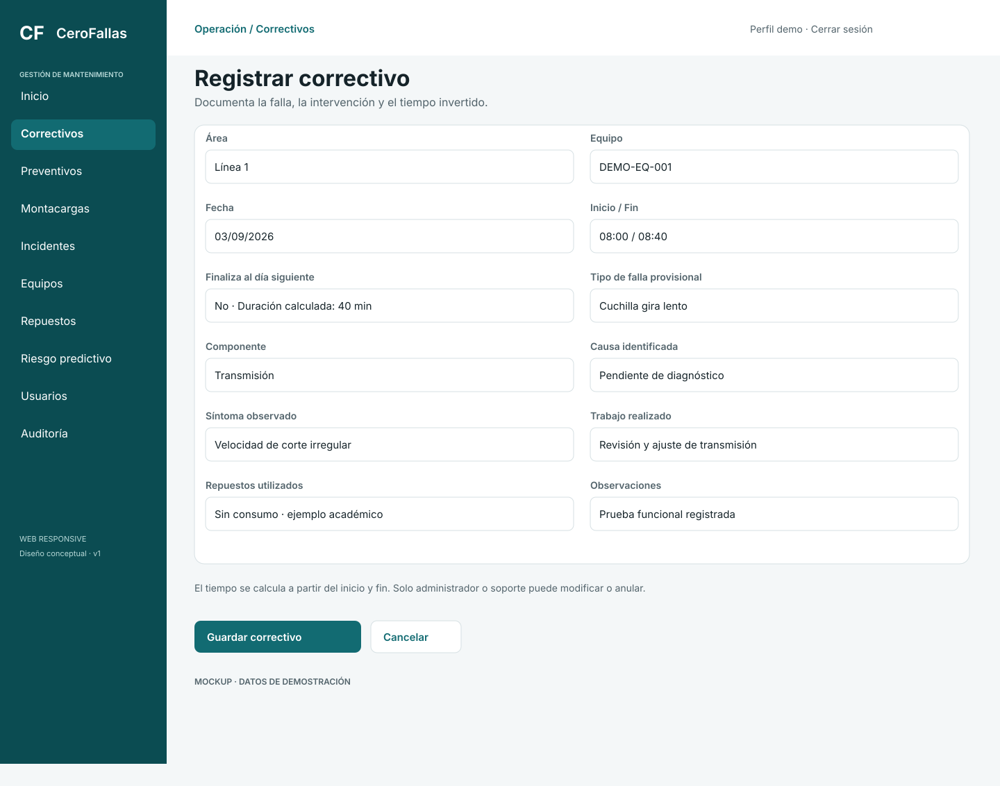
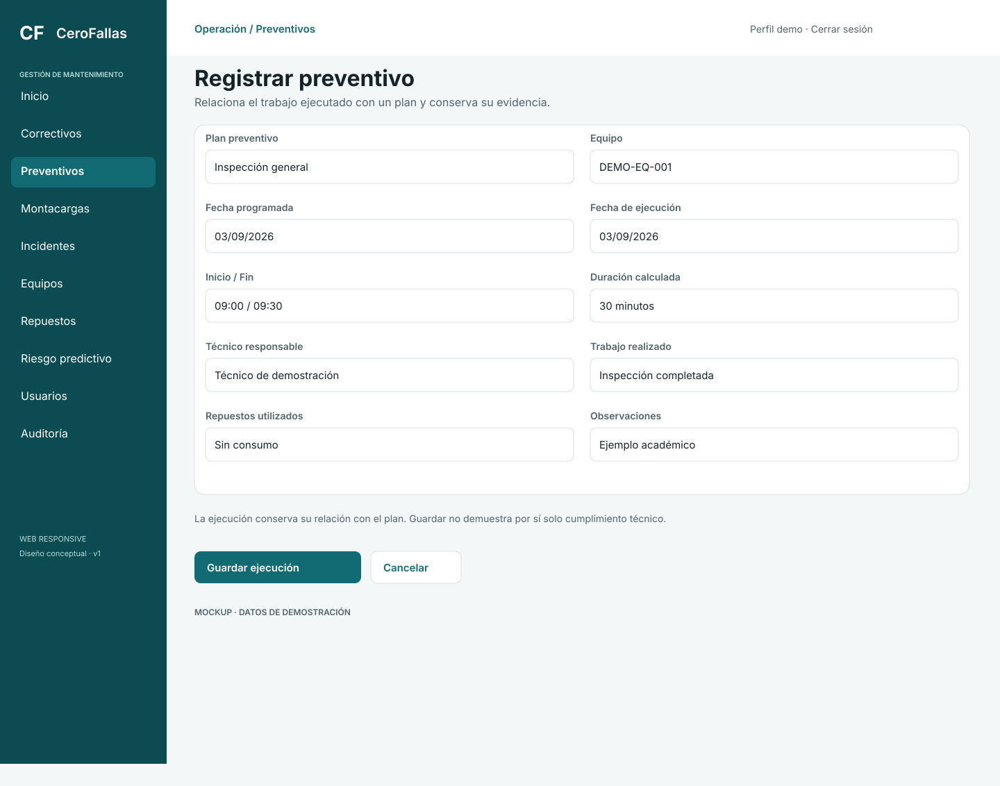
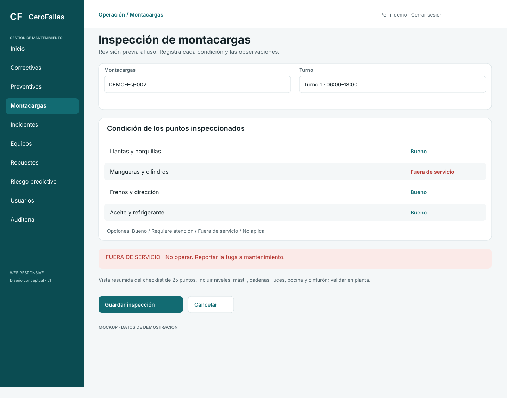
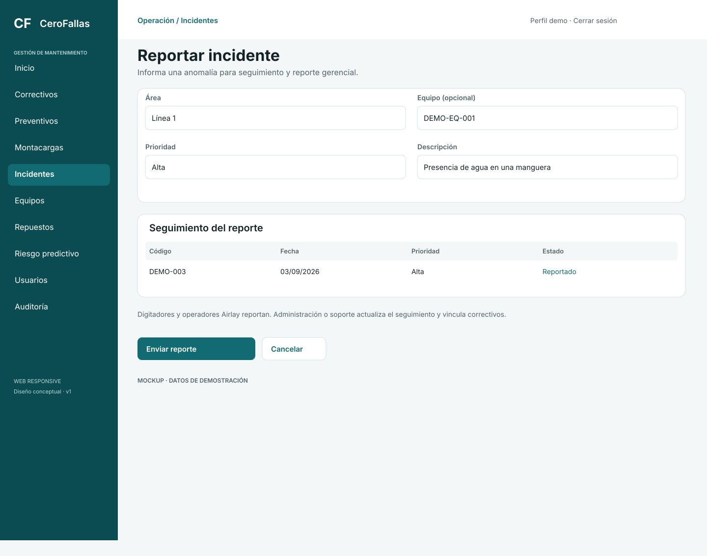
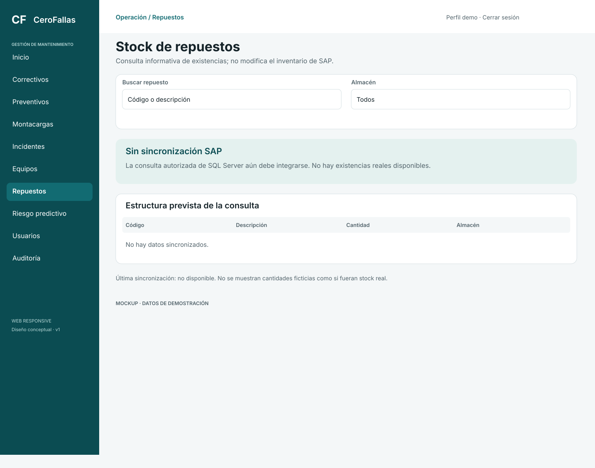
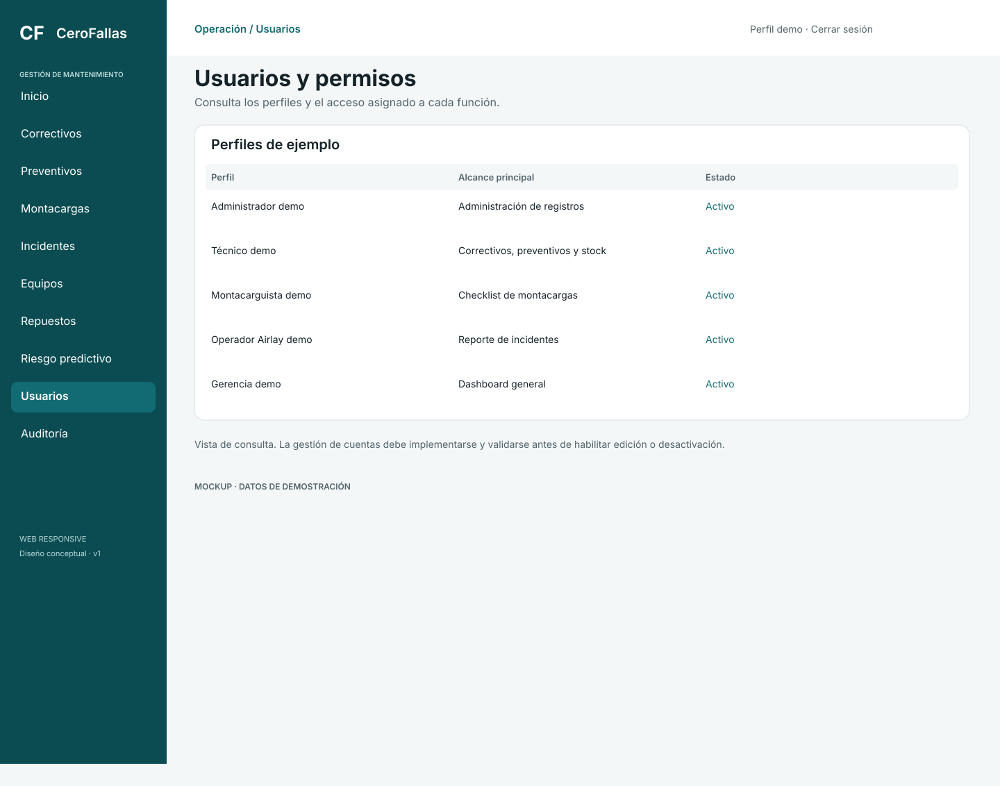
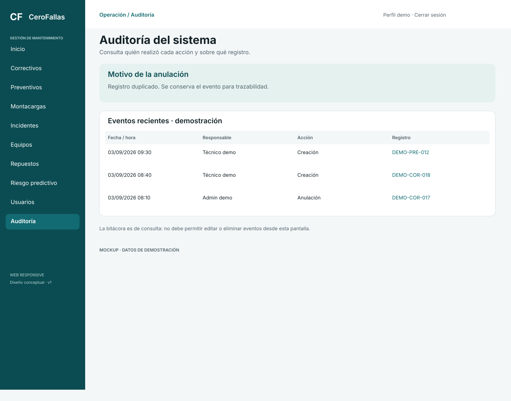
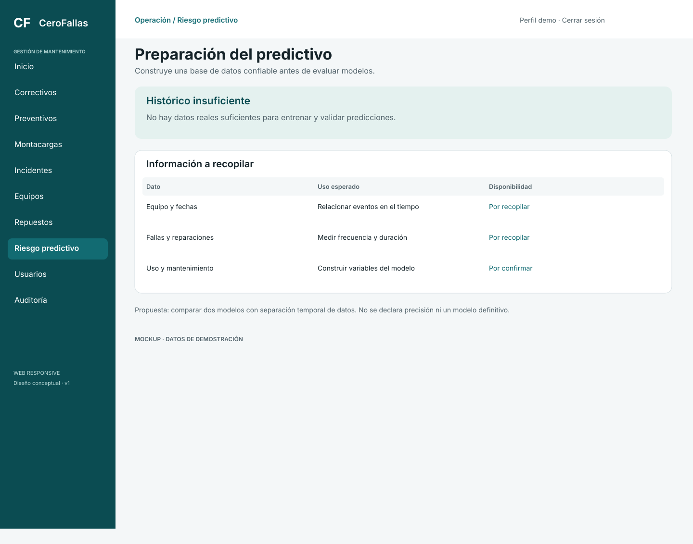
Descargar SVG · 390 × 844
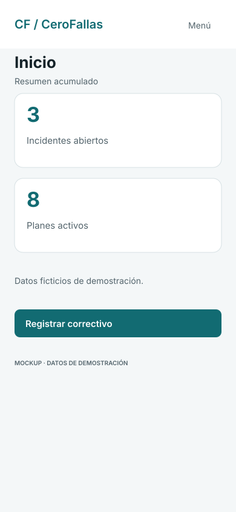
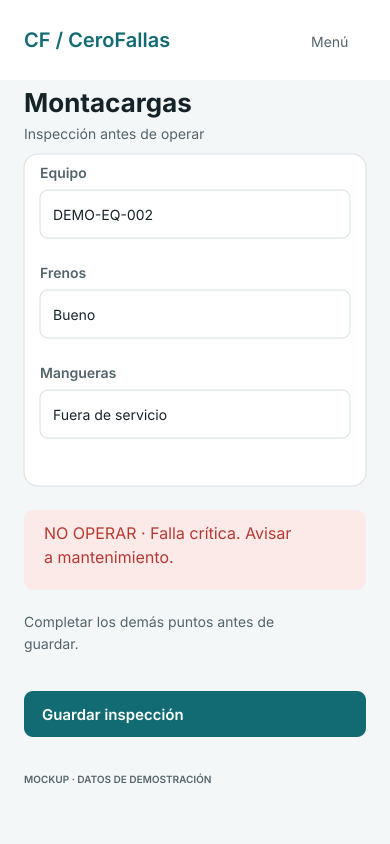
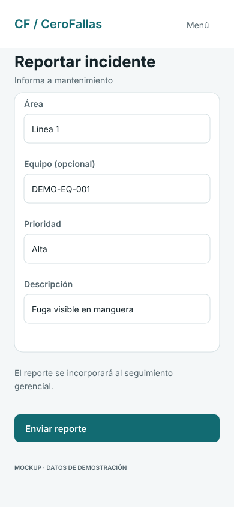